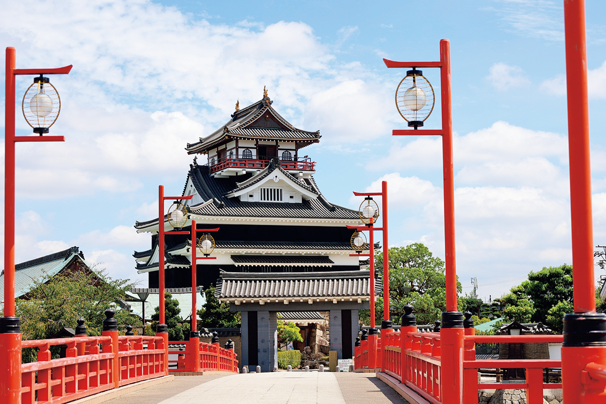
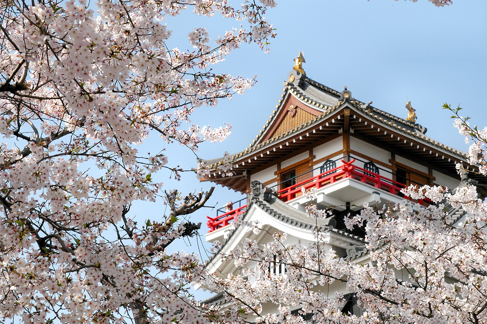
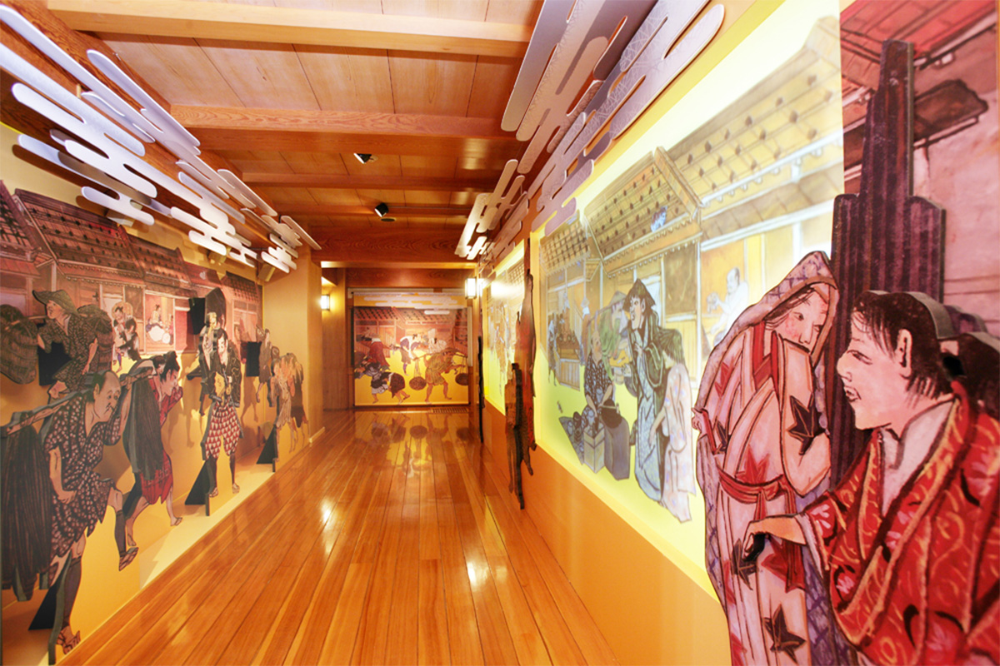

Префектура Айти · Киёсу · история
Замок Киёсу: где после гибели Нобунаги решали, кому достанется власть

Летом 1582 года в замке Киёсу собрались главные полководцы дома Ода, чтобы решить, кто наследует погибшему Нобунаге. Спор о трёхлетнем ребёнке закончился тем, что власть перешла к Хидэёси, выходцу из самых низов.
Замок
Первая резиденция Нобунаги
Хидэёси Тоётоми (1537–1598) прошёл путь от низов до правителя всей Японии, и его история не раз становилась сюжетом кино и сериалов. В 2026 году в центре большого исторического телесериала оказался его младший брат Хидэнага (1540–1591), и о братьях Тоётоми снова заговорили. Их дорогу удобно прослеживать по замкам, и один из важнейших стоит в городе Киёсу, к северо-западу от Нагои.
Замок Киёсу был резиденцией главной ветви рода Ода, которая управляла провинцией Овари от имени военного губернатора. Нобунага Ода (1534–1582), будущий объединитель Японии, происходил из младшей ветви рода: он сделал Киёсу своей ставкой и прожил здесь около десяти лет, пока не перенёс её на гору Комаки.

1582
Совет в Киёсу
В 1582 году Хидэёси, ещё под фамилией Хасиба, осаждал замок Такамацу в провинции Биттю, на западе страны. Там его настигла весть: Нобунага убит. Его вассал Мицухидэ Акэти (ок. 1528–1582) поднял мятеж и напал на господина в храме Хонно-дзи в Киото. Хидэёси добился сдачи замка, заключил мир с враждебным кланом Мори и немедленно повёл войско назад. Этот бросок вошёл в историю как «Великое возвращение из Тюгоку».
Через одиннадцать дней, 13-го числа шестого месяца, Хидэёси встретился с Мицухидэ у горы Тэнно под Ямадзаки, к западу от Киото. Он шёл мстить за господина, под этим знаменем собрал больше воинов, чем мятежник, и выиграл битву при Ямадзаки.
27-го числа того же месяца главные вассалы дома Ода съехались в замок Киёсу. Вместе с Нобунагой в дни мятежа погиб и его старший сын Нобутада (1557–1582), который уже возглавлял род, поэтому нужно было решить, кто станет наследником. Ниже ход совета изложен так, как его принято описывать.

На главенство претендовали двое: второй сын Нобунаги, Нобукацу (1558–1630), и третий, Нобутака (1558–1583). Кацуиэ Сибата поддержал Нобутаку. Хидэёси же настаивал, что наследником должен стать Самбоси (1580–1605), сын погибшего Нобутады, позднее известный как Хидэнобу Ода. Мальчику было всего три года, и спор вышел жарким. Сошлись на том, что Нобукацу и Нобутака станут опекунами Самбоси.
Решающим оказалось слово Хидэёси: он отомстил за Нобунагу, и это перевесило всё остальное. Руководить делами дома Ода стал он. Так замок Киёсу оказался ещё одной важной сценой японской истории.
Участники
Четыре полководца за одним столом
Замок Киёсу
- Адрес
- префектура Айти, Киёсу, Асахи Сироясики, 1-1
- Телефон
- +81 52-409-7330
- Часы работы
- 9:00–16:30
- Выходные
- понедельник (если это праздник, то следующий будний день), 29–31 декабря; в сезон цветения сакуры открыто без выходных
- Цены / Вход
- 400 иен